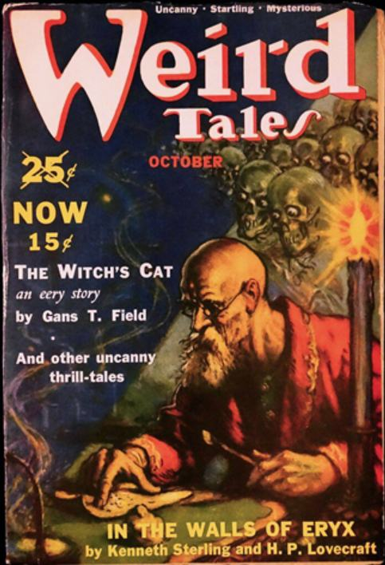
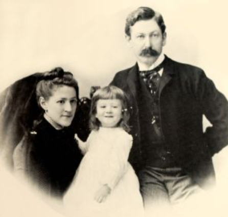
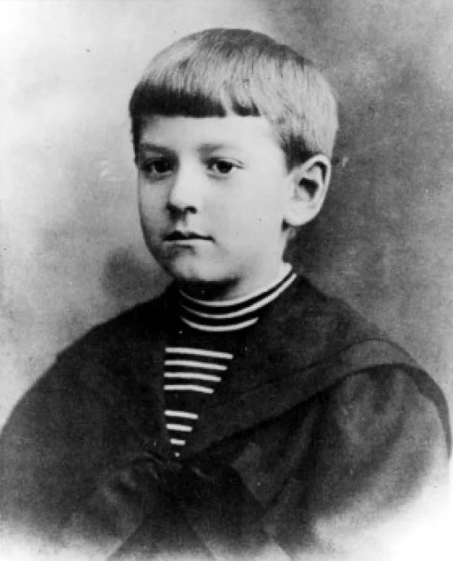
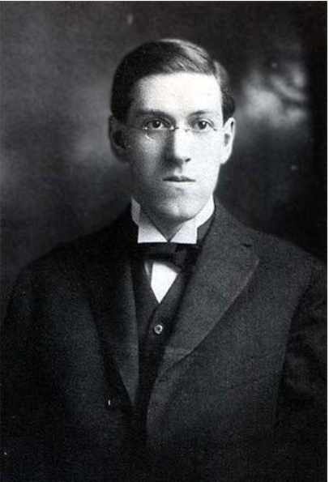
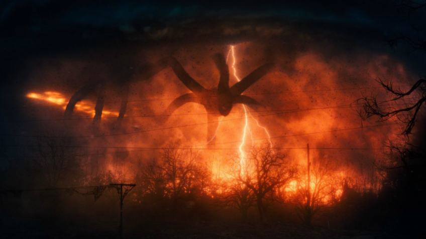
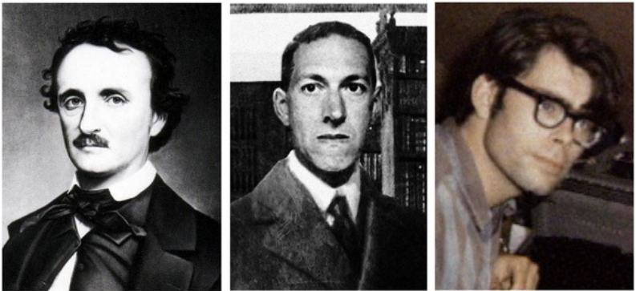
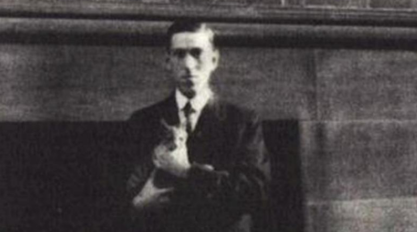
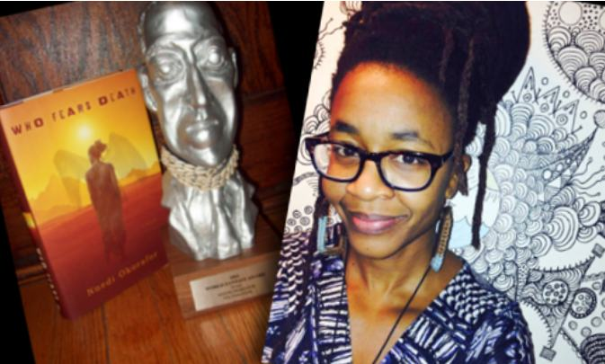
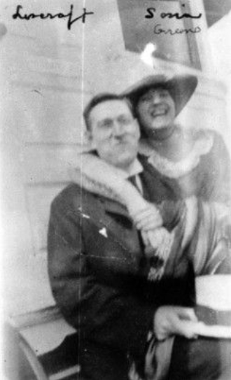

The oldest and strongest emotion of mankind is fear, and the oldest and strongest kind of fear is fear of the unknown. H. P Lovecraft
Describing Lovecraftian horror exactly may not be possible. In fact, I feel that calling it horror isn’t correct. Dread would be a better-suited word because such literary work doesn’t scare you as you consume it but instead sticks with you, grows, branches until you start to question your surroundings. In a sense, it is very meta because what you go through is highly similar to what the protagonist in a typical Lovecraftian tale goes through. (Except we don’t go insane. Probably. ) The hero feels an intense sense of intrigue as he unravels a massive conspiracy or mystery until he realises that what he has witnessed is beyond his comprehension, driving them insane. Although a unique idea back in the 1920s, this has become a common trope in modern cinema and television.

Weird Tales and the Cthulhu mythos
Lovecraft created a fictional world that almost seamlessly mirrored the real one except for supernatural occurrences. Replete with names of streets,universities, and cities, Lovecraft made the reader feel like they were actually looking at a small-town in the local geography. No other author had managed to create quite as personal an experience for readers.
The landscape’s reality is superseded only by the intrigue attached to the great Eldritch gods, who are a race of monstrous god-like creatures that have existed since the very creation of time and space. Dagon and The Call of Cthulhu are two stories that specifically mention the name of some of these creatures and give us tangible descriptions of their behaviour.
They have a mollusc-like appearance and a slimy fish reminiscent picture of these creatures is painted. They are magisterial beings, and information associated with them is undefined, vague and largely obscure. Here the abstruseness of the monsters ties them intimately with the notion of terror. This ambiguous storytelling allows the reader’s imagination to fill in the blanks and unearths the most profound and terrifying fragments of memory to create a fantastically distorted picture unique to each reader.
The kind of horror they create as omnipotent masters of irrelevant human puppets is disturbing and challenging to put in words. Imagine a worm stumbling upon a circuit board, ignoring it and carrying on with its life. One dull day the worm realises the significance of what it had seen. It is driven mad when it obsesses over what it has seen as a human; That circuit board represents just how meaningless the worm’s life is. Those markings, complex mechanisms and those buzz-like enchantments signify the presence of a higher form of energy. Now imagine that it is given a tiny glimpse into the knowledge that a human possesses. For that brief moment, it feels emotions, and has access to unending amounts of philosophical knowledge. As the worm let’s go, it realises the scope of what it has witnessed. It knows that the microscopic brain it possesses can’t comprehend what it has seen. However, it has more questions than answers. It yearns for another second of vision through this godly lens, and in its yearning and curiosity for answers, it is driven insane. The worm knows that its world doesn’t matter anymore, and anything it can ever do will be inconsequential.
These monstrosities, since then, have gone on to become cultural icons. Their connection to the early stages of the planet, eldritch wisdom, and the sense of trepidation that they radiate have inspired other authors to pick up on them and use them in their own stories. One must credit Lovecraft’s generosity as a writer here as he encouraged and mentored other writers and gave them the license to treat the universe he had built as a sandbox for their visions. It may be because he considered this free advertisement for his work, but it was remarkably progressive for a man as closed-minded as Lovecraft. This widespread fanfiction was the birth of the Cthulhu Mythos.

A journey into the mind of Lovecraft
Before proceeding with the article, it is worth examining just how the writer’s brain developed such a distorted sense of horror.
To say that Lovecraft was a man with issues would be a remarkable understatement. Lovecraft was born in Rhode Island in 1890 and spent most of his tragic childhood in New England. He was born into a wealthy household with elitist ideals; however, his world turned upside down. Over the course of his childhood, his family lost affluence, and his parents suffered traumatic psychotic episodes.

In 1893, his father was admitted into Butler hospital due to a mental breakdown suspected of being a symptom of Syphilis. However, Lovecraft remained ignorant of it and maintained that the reason was his father being overworked and that this state continued until his father’s death. Their fiscal condition was significantly affected after this incident and his mother’s condition deteriorated as well. From historical accounts, it seems that his mother became highly protective of him. Her behaviour resembled paranoia; she did not even let Lovecraft out of sight because of all the ‘danger’ outside. Lovecraft recalls that his mother was “permanently stricken with grief” after his father’s hospitalisation.
However, the death of his grandmother seems to have the most significant influence on his development as a writer. This period was when he started having nightmares about horrifying monsters and eldritch gods.

Lovecraft was an atheist who had started questioning his protestant teachings at a very young age. Upon being told that Santa Claus was a myth, he responded, “God isn’t equally a myth?”. Lovecraft suffered from depression and suicidal tendencies in his adolescent years. He states in a letter that the only reason he didn’t commit suicide was because of his interest in science. Astronomy and chemistry were of great interest to Lovecraft. Even though Lovecraft was highly well-read, he was never able to complete his education formally. He had episodes of severe mental illness, and he could not even go to school for long periods. (It is theorised that the root of these mental breakdowns was the realisation that he may never be able to become an astronomer because he was weak in mathematics. This is suspected to be why mathematics was used as an element of horror). Even on his good days, Howard felt extreme social anxiety and agoraphobia (a fear of places and situations that might cause panic, helplessness or embarrassment). It is worth noting that in his earlier years, he was a shut-in, under the constant pampering of his paranoid mother, isolated and a victim of frequent psychological abuse. These traits were of great significance in his development into a mastermind of weird fiction and the racist ideology in his writing.
Howard’s deranged mental state and pampered childhood left him with lots of fear and conservatism to such a substantial degree that he ended up developing a wide array of phobias. He was afraid of medicine and doctors. He was scared of rain. He was terror-struck by geometry (been there). He was terrified of romance. He was even frightened by colours that the human eye could not see (basically most of the electromagnetic spectrum). He was petrified at the sight of immigrants. Well, I have now run out of synonyms for ‘scared’, so to simply put things, it would be more convenient to say that he was horrified of everything and everyone (excluding the Nordic-Aryan origin New England folk, of course).

As an adult, Lovecraft decided to revive some of the scientific journals he wrote in high school and started creating racist poems praising the Aryan originated white people and declaring African American folk a segway between man and beast. Soon after being done with these catastrophic poems, he started writing for pulp fiction and weird fiction magazines. This period was where Lovecraft had found supporters who would encourage him to write and publish. As awkward as Lovecraft was, he eventually married a Russian Jewish immigrant named Sonia Greene after confessing to her that she was the only woman he had kissed. Their marriage shouldn’t have worked on paper because of his anti-Semitic and anti-immigrant beliefs, but it was surprisingly wholesome.
Lovecraft was never able to support the household because writing fantastical fiction did not pay a lot. Add on to this Howard’s fear of rejection and criticism, which meant that he was very reluctant to adjust to the needs and demands of publishers. Lovecraft still believed in living life like an aristocrat and refused to be seen as someone who works to support himself rather than for his satisfaction. This meant that he lived life on the bare minimum for most of his adulthood and was even malnourished. Lovecraft was never able to gain prominence and mainstream fame, even though his weekly writings in weird tales were pretty popular. This was because he was a prolific writer but not a voluminous one. His writing style was far too archaic and difficult to understand. Soon his mother was hospitalised too, and it is theorised that this was either because of the stress due to the lack of money or because she had contracted Syphilis from her husband. Lovecraft visited her regularly, but she soon died. His wife Sonia did her best to support him in New York with the jobs she could find. Eventually, she moved to Cleveland for a job which meant that she barely saw Lovecraft anymore; still, she kept sending him his weekly allowance. The great depression did not make things easy for the couple either.
They were separated for years on end and eventually decided to take an amicable divorce. Sonia remarried without ever knowing that Lovecraft had never signed the divorce papers, contrary to his assurances. Lovecraft died in 1937 obscure and penniless, but he managed to immortalise himself through his literature.
Inspirations and influence on the zeitgeist
If you have watched television shows like Stranger Things, True Detective or read Stephen King novels, then you already have an introduction to the Lovecraftian brand of horror. Cosmic and existential horror have become familiar tropes in modern pop culture. Their influence is not just restricted to Hollywood; it is also prevalent in Korean cinema, the anime industry and the gaming industry. Junji Ito’s Uzumaki and the game Bloodborne are examples of the masterful adaptation of the Lovecraftian ethos resulting in a delightfully chilling concoction of intrigue, amazement and horror.

Several directors like Guillermo Del Toro, Ridley Scott and Joss Whedon have also been known to incorporate Lovecraftian tropes in their cinema frequently. Even today, his literature is of keen interest to academics and is rigorously dissected by researchers to teach about speculative realism, object-oriented philosophy and 20th-century posthumanism. Although niche, his influence on music is pretty noteworthy too. If you, like me, are an avid listener of heavy metal and psychedelic rock, then you too must have noticed his influence here. Metallica recorded an instrumental titled the “Call of Ktulu” and “The Thing that should not be”, which are full of references to the dark prince of Providence (a nickname given to Lovecraft by Stephen King).
It is obvious that Lovecraft’s prominence in modern culture is here to stay.
It is worth exploring the literary roots of his creation, as it is very telling of the connection between the 18th and 19th centuries and the zeitgeist.
Lovecraft’s grandfather ensured that Howard was a regular reader as a child. Ultimately young Philip developed a keen interest in gothic horror literature. Young Lovecraft had a voracious appetite for reading, and he immersed himself in the library near his home.
Edgar Allan Poe is undoubtedly one of the most prominent and well-known influences to Lovecraft. His influence is evident in Lovecraft’s prose and his gothic settings, such as The Rats in the Walls, Cool Air, and Lovecraft’s interest in burial, ghouls, and death. Lovecraft describes Poe as the “God of Fiction” and has even directly quoted him on more than one occasion. Algernon Blackwood’s The Willows is easily one of the most remarkable cosmic horror tales ever conceived. Heavily featuring themes of mystery, isolation, imprisonment, and a world beyond comprehension, the novella is most certainly haunting. The King in Yellow by Robert W Chambers is one of the most critical works which helps one appreciate Lovecraft to a greater extent. Lord Dunsany, William Hope Hodgeson, Ambrose Pierce, Algernon Blackwood and Arthur Machen are some of the other prominent authors who have influenced Lovecraft.

Bigotry in Lovecraftian literature
Part of Lovecraft’s genius is his ability to make the reader, just for a few minutes, afraid of everything around them. This sense of omnipresent fear and alienation is what codified the genre of cosmic horror. During the 1920s, racism was far more acceptable and commonplace than today, but Lovecraft was incredibly racist even for that time. As much as his close-minded xenophobic, racist ideals disgust me, Lovecraft’s prejudices did indeed influence his fiction. Racism is an essential aspect of Lovecraftian horror, as it was his fear of the unknown which he used to conjure and portray his view of the world.
In the so-called “modern” first world countries, stories of white genocide, super predators, and the master race are still prevalent theories (In fact, they are even leveraged during elections to generate votes out of fearful “nationalists”). The contemporary relevance of Lovecraft will extend beyond what most of his devoted followers would care to admit. Despite his widely known literary techniques and accomplishments, his bigotry and race-inflected narratives can’t be swept under the rug. His disturbing ideals are still breathing, even the most toxic and rotten amongst them.
Lovecraft never even made an effort to conceal his hatred and disdain for minorities; he would openly publish the most preposterous and twisted ramblings on those he considered a threat to his “Aryan” purity. He warned his friends and acquaintances of the Jew’s secret agenda to take down the Aryans of New York and even sympathised with Hitler’s cause. However, his contempt for blacks was even more profound.(Google the name of his cat !) He was a firm believer in segregation, maintaining that any interaction between blacks and whites would lead to catastrophe and destruction.

Lovecraft even tended to get furious upon seeing immigrants on public transport. His wife recalls that his face would turn angry and livid upon seeing workers of minority races. Therefore, it is of no surprise to me that such a racist imagination possesses this uncanny ability to concoct the most vicious and devilish representations of minorities, non-natives, social hierarchies, and political forces to give those depictions vitality and plausibility.
A decade ago, this led to a major controversy. The World Fantasy Award is a prestigious literary achievement given to writers excelling in the field of fantastical fiction. The trophy is a caricatured bust of H.P Lovecraft himself which was meant to acknowledge his masterful precedent in this field. It wasn’t apparent to most how ignorant it was to give the bust of Lovecraft to a black or Jewish author until Nnedi Okorafor (the first black winner of the award) took to the stage to express the internal conflict she felt upon receiving the award.

An eventual improvement? Kind of Sorta?
As much as I have criticised Lovecraft’s bigotry, I want to conclude this article by highlighting his endeavours to change his ways. What follows is not an apologist’s excuse or justification for his actions but a description of how Lovecraft’s philosophy evolved over time.
There is strong evidence that the source of Lovecraft’s paranoia and twisted fears was his isolated approach to life up until adulthood. There was never a time when Lovecraft was not racist; however, his attitude and opinions changed for the better in his last decade.
Of his horror fiction, the work that probably seems the most overtly racist is “The Horror at Red Hook”, which features phrases like “The devil-worshipping Yazidis” and “unclassified Asian dregs”. It should also be noted that it is a treatise on the negative social consequences of the mistreatment of immigrants. The protagonist is also an immigrant. “The Shadow Over Innsmouth” highlights the author’s fear of miscegenation (he was freaked out when he found out that one of his great-grandparents was Welsh). Still, it is a Lovecraftian critique of colonialism. A South Seas trader makes a career out of taking advantage of technologically inferior indigenous folk, until he encounters a technologically superior civilisation and is similarly taken advantage of. The novella “At the Mountains of Madness” ends with the narrator concluding that even monstrous prehistoric beings that look nothing at all like humans but have shared values like scientific curiosity and a love of art should be respected as peers.
These efforts were undoubtedly unsuccessful; “noble savage”, “inscrutable Oriental”, and “magical Indian chief” are still quite antipathetic characterisations even if they were intended to be sanguine.
Ultimately, he did start taking steps in the right direction, even if they were baby steps. This change was possible because he actually made an effort to expand his horizons by socialising with an open-minded approach. He was even accepting of an extremely primitive melting pot philosophy towards American society and ended up marrying a Russian immigrant Jew. That’s not all, though; he even ended up supporting socialism, but that was primarily because of his own poverty.
After having read all about his grotesque ideology, this put a bittersweet smile on my face. It reminded me about a decade-old memory of Modern Family, where the episode concludes with a commentary on whether an adult can change over the course of their life. One of the show’s characters, attempting to answer the question, says that people are who they are, give or take 15% and that too if they really really want to.
People change for themselves or maybe because of the people they love. But sometimes, even that little change is enough to have a positive impact on those around them.
During my research for this article, I developed a lot of resentment for H.P Lovecraft, however, seeing a transformation in a traditionalist as rigid and chauvinistic as Lovecraft gives me hope for the future, considering the scenario of partisan and sectarian contemporary politics.
